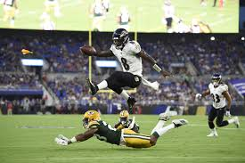
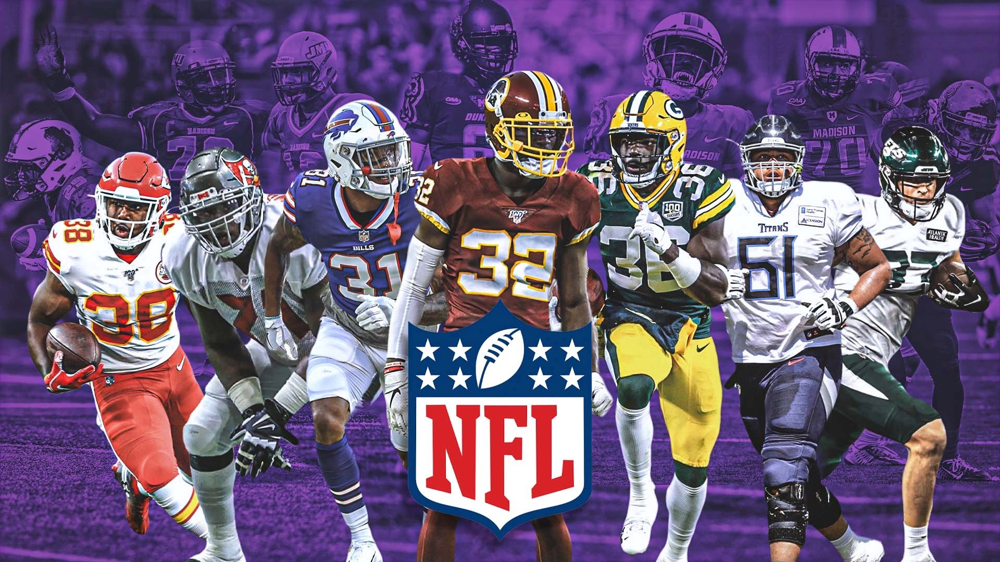

AFC Championship Game Highlights | NFL 2020 Playoffs


The National Football League (NFL) is a professional American
football league consisting of 32 teams, divided equally between the
National Football Conference (NFC) and the American Football Conference (AFC).
The NFL is one of the four major North American professional sports leagues,
the highest professional level of American football in the world,
the wealthiest professional sport league by revenue, and the sport league with the most valuable teams.
The NFL's 17-week regular season runs from early September to late December, with each team playing 16 games and having one bye week.
Following the conclusion of the regular season, seven teams from each conference (four division winners and three wild card teams) advance to the playoffs, a single-elimination tournament culminating in the Super Bowl, which is usually held on the first Sunday in February and is played between the champions of the NFC and AFC. The league is headquartered in Midtown Manhattan.